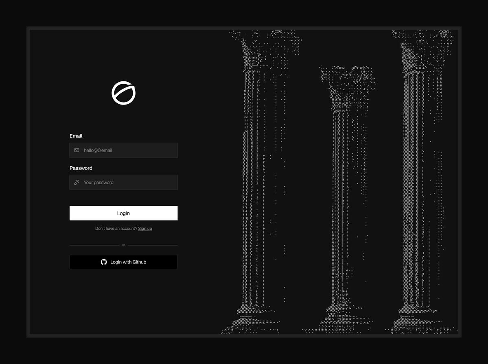

Proposed patterns for the four content surfaces the research-paper skill most often needs to render: dictionaries (any key→value structure — document metadata, glossaries, parameter sheets, term definitions), Steckbriefe (image + dict composites for subject identification), ordered and unordered lists, and tables. Each variant carries a short description and a suggested use-when. Pick the patterns to keep, drop the rest, fold the keepers into SKILL.md and style-tokens.css.
All four variants render the same underlying structure — a key→value map — and differ only presentationally. The choice depends on field count, value length, and how much visual weight the dict deserves. Document metadata, parameter sheets, glossaries, and term definitions are all dict renderings.
A single horizontal mono row bracketed by hairlines. LABEL value · LABEL value · … across the page. Three or four fields fit comfortably; more becomes cramped.
the dict is supporting rather than central — short notes, status pages, masthead metadata strips, individual concept entries.
Multi-column grid on a white surface, hairline borders, mono values under uppercase-letterspaced eyebrows. Fits many short fields in a small area; reads as a punch-card or compact data sheet.
you have 6+ short fields with parallel structure and want a compact title-page block — architecture overviews, knowledge-base pages, concept notes with substantive metadata.
Two-column layout: uppercase keys right-aligned, mono values left-aligned, vertical scan. The classic specification-sheet pattern used in technical manuals, product spec pages, library catalogue cards.
the dict reads top-to-bottom rather than left-to-right — formal specifications, product data sheets, instrument readouts, anywhere the reader scans a vertical column of key/value pairs.
Italic-serif key in the left column, prose value in the right. Values can be long and wrap freely. The glossary / parameter-list / bibliography pattern; the only dict variant where values are themselves sentences.
values are sentences rather than tokens — glossaries, parameter documentation, configuration key explanations, term definitions, bibliography entries.
A composite block: a subject image bound to a dict that identifies it. Long print tradition — wanted posters, library catalogue cards, museum specimen sheets, botanical / zoological survey forms, archaeological find sheets. The image earns its place by being the subject of the identifying metadata, not decoration on top of it. Pair with any of K1–K4; dl.dict-grid is the most common choice.
Dict on the left in column-aligned form (K3), image fixed at a 220 px column on the right, both compartments wrapped in a unified hairline card frame with an internal divider. The card carries the visual unity, so asymmetric block heights become invisible. Right-aligned uppercase keys point typographically toward the image — KEY · value · subject. Reads as a library catalogue card: identifying text on one side, the subject on the other, one frame around both.

the document identifies a subject — an object, a specimen, a person, a location — and the image is the subject itself. Common cases: archive node title pages, specimen / artifact catalogue entries, system or machine identification, archaeological find sheets, profile / portfolio author cards.
Standard <ol> with default numerals and indent. The lowest-decoration option; trust the prose to do the work.
you need a sequence but it isn't a procedure — most enumerated reasoning and inline lists inside prose.
Each step gets a horizontal hairline above it and extra breathing room. Numerals in monospace via ::marker. Reads as a runbook: each step is its own moment.
the order matters and each step is an action — runbooks, installation procedures, sequential workflows, recipe-like instructions.
Numerals rendered as [1] [2] in monospace, hanging in the left margin. Mirrors the citation list convention in academic papers.
the list is a reference / bibliography / footnote roster and items need addressable identifiers.
Standard <ul> with bullet markers. The lowest-decoration option for an unordered enumeration.
Each item prefixed with an em dash in muted gray. Less ornament than a bullet; reads as essay prose rather than spec list.
the list belongs inside flowing prose and a bulleted register would intrude — essay-like documents, footnoted commentary, soft enumerations.
Indented lines without any leading mark. Reads as a sequence of related statements rather than an enumeration.
the items are parallel statements rather than independent options — recommended mental-model summaries, layered descriptions.
Each item separated by a horizontal hairline, optional monospace date or identifier on the left. The change-log / feed pattern.
the items are independent events with timestamps or identifiers — change logs, status timelines, decision records, activity feeds.
Heavy top/bottom rules, thin header rule, no verticals, dotted hairline between rows, numbered caption below. The canonical research-paper table.
| Module | Role | Owns | State |
|---|---|---|---|
| systems/base-system.scm | Policy | Shared baseline | Stable |
| systems/T450s.scm | Host | Hardware identity | Stable |
| systems/X1.scm | Host | Hardware identity | Stable |
the data has labelled columns and prose-leaning cells — module maps, inventories, comparison rosters, reference tables of every kind.
Row and column labels in italic serif; cells contain marks (— diagonal, • present, · absent) in monospace. The adjacency-matrix / compatibility-chart pattern.
| channels | system | host | home | scripts | |
|---|---|---|---|---|---|
| channels | — | · | · | · | · |
| system | • | — | · | · | · |
| host | • | • | — | · | · |
| home | • | · | · | — | · |
| scripts | · | · | · | • | — |
you're showing relationships between two indexed sets — dependency graphs, compatibility charts, feature-by-product matrices, adjacency between layers / modules / hosts.
Same booktabs frame but tighter padding and no row separators. Fits more rows on a page; reads as a roster or index rather than a discussion.
| Script | Purpose | Surface |
|---|---|---|
| terminal-dashboard.scm | Terminal task dashboard | StumpWM |
| dashboard.scm | Desktop dashboard | StumpWM |
| add-todo.scm | Append a todo from anywhere | StumpWM |
| setup-devices.scm | Device bring-up routine | Manual |
| samsung-monitor.scm | External monitor toggle | StumpWM |
| internet-toggle.scm | Network on/off shortcut | StumpWM |
| git-sync.scm | Sync personal repos | Manual |
| git-contribution-extractor.scm | Extract contribution stats | Manual |
| claude-guix.scm | Guix-launched Claude agent | Manual |
| pi-guix.scm | Guix-launched pi (pi.dev) agent | Manual |
| check-guile-only.scm | Policy check (no shell scripts) | QA |
rows outnumber visual breathing room — script indices, file inventories, registry listings, anything that's more catalogue than discussion.